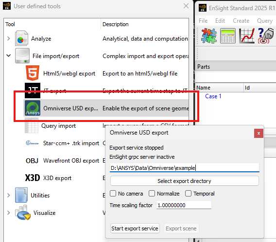

PyEnSight/ANSYS Omniverse Interface#
PyEnSight includes an interface to export geometry representing the current EnSight scene to an Omniverse server. The interface supports EnSight 2023 R2 or later. It leverages the EnSight Dynamic Scene Graph gRPC interface to access the scene. It is also possible to export EnSight scene as glTF (GLB) format files and convert them into USD format.
The API is available through a PyEnSight session instance, from EnSight Python directly as (ensight.utils.omniverse for 2025 R1 and later) and from within Omniverse applications via the ansys.tools.omniverse.core and ansys.tools.omniverse.dsgui kit extensions.
The Python API is defined here: Omniverse.
PyEnSight and EnSight Python API#
The API can be used directly from a local Python installation of the ansys-pyensight-core module:
def monitor_export(session):
found = False
start = time.time()
while not found and time.time() - start < 60:
status = session.ensight.utils.omniverse.read_status_file()
if status.get("status") == "idle":
found = True
time.sleep(0.5)
return found
from ansys.pyensight.core import LocalLauncher
session = LocalLauncher(batch=False).start()
session.load_example("waterbreak.ens")
# The directory to save USD representation into
usd_directory = "/omniverse/examples/water"
# Start a new connection between EnSight and Omniverse
session.ensight.utils.omniverse.create_connection(usd_directory)
monitor_export(session)
# Do some work...
# Push a scene update
session.ensight.utils.omniverse.update()
monitor_export(session)
Note
The batch=False option used in the examples causes the EnSight
GUI to be displayed together with the Omniverse Composer GUI.
It is possible to run a pyensight script from inside of an Omniverse kit application. In this case, care must be taken to close the EnSight session before exiting the Omniverse application hosting the PyEnSight session or is it possible to leave the EnSight instance running.
From inside an EnSight session, the API is similar:
def monitor_export():
found = False
start = time.time()
while not found and time.time() - start < 60:
status = ensight.utils.omniverse.read_status_file()
if status.get("status") == "idle":
found = True
time.sleep(0.5)
return found
# Start a DSG server in EnSight first
(_, grpc_port, security) = ensight.objs.core.grpc_server(port=0, start=True)
# Start a new connection between the EnSight DSG server and Omniverse
options = {"host": "127.0.0.1", "port": str(grpc_port)}
if security:
options["security"] = security
usd_directory = "/omniverse/examples/water"
ensight.utils.omniverse.create_connection(usd_directory, options=options)
monitor_export()
# Do some more work...
# Push a scene update
ensight.utils.omniverse.update()
monitor_export()
Please note, the USD export is asynchronous. Without a proper routine to wait for the
export to be complete, a script might exit before the export is actually finished.
The two monitor_export routines propose a simple monitoring of the export that uses
the read_status_file interface, which can read a status file that reports if the
current export is complete or not.
After running the script, the scene will appear in any Omniverse kit tree view
under the specified directory. The file dsg_scene.usd can be loaded into
Omniverse applications such as Create. The ensight.utils.omniverse.update() command
may be used to update the USD data in Omniverse, reflecting any recent changes in
the EnSight scene.
Starting with 2025 R1, one can also access Omniverse via an EnSight user-defined tool:
Clicking on “Start export service” executes something
similar to the previous Python snippet and the button will change to
a mode where it just executes ensight.utils.omniverse.update()
when the “Export scene” button is clicked.
Note
Several of the options are locked in once the service is started. To change options like “Temporal”, the service must often be stopped and restarted using this dialog.
Running the Scene Exporter via Command Line#
A pyensight install includes the omniverse_cli module which
may be used to execute an export operation from the
command line or launch the export service. The Python included
in the EnSight distribution includes this module as well. Assuming
the pyensight repository has been cloned to: D:\repos\pyensight the
following can be run in the Python virtual environment that was
used to build the module and the module installed:
cd "D:\repos\pyensight"
.\venv\Scripts\activate.ps1
python -m build
python -m pip uninstall ansys.pyensight.core -y
python -m pip install .\dist\ansys_pyensight_core-0.9.0.dev0-py3-none-any.whl
python -m ansys.pyensight.core.utils.omniverse_cli -h
The following help output will be generated:
usage: omniverse_cli.py [-h] [--verbose verbose_level] [--log_file log_filename] [--dsg_uri DSG_URI]
[--security_token token] [--monitor_directory glb_directory] [--time_scale time_scale]
[--normalize_geometry yes|no|true|false|1|0] [--include_camera yes|no|true|false|1|0]
[--temporal yes|no|true|false|1|0] [--oneshot yes|no|true|false|1|0]
[--line_width line_width]
destination
PyEnSight Omniverse Geometry Service
positional arguments:
destination The directory to save the USD scene graph into.
options:
-h, --help show this help message and exit
--verbose verbose_level
Enable logging information (0-3). Default: 0
--log_file log_filename
Save logging output to the named log file instead of stdout.
--dsg_uri DSG_URI The URI of the EnSight Dynamic Scene Graph server. Default: grpc://127.0.0.1:5234
--security_token token
Dynamic scene graph API security token. Default: none
--monitor_directory glb_directory
Monitor specified directory for GLB files to be exported. Default: none
--time_scale time_scale
Scaling factor to be applied to input time values. Default: 1.0
--normalize_geometry yes|no|true|false|1|0
Enable mapping of geometry to a normalized Cartesian space. Default: false
--include_camera yes|no|true|false|1|0
Include the camera in the output USD scene graph. Default: true
--temporal yes|no|true|false|1|0
Export a temporal scene graph. Default: false
--oneshot yes|no|true|false|1|0
Convert a single geometry into USD and exit. Default: false
--line_width line_width
Width of lines: >0=absolute size. <0=fraction of diagonal. 0=wireframe. Default: None
Listing the various command line options.
The core operation of this CLI tool is to convert a scene into USD format. The resulting USD data can be read into Omniverse, Blender and other DCC asset pipelines. The input data for this conversion can come from one of two sources: the EnSight Dynamic Scene Graph gRPC server or via GLB files.
The command line tool can be run in two different modes: server and one-shot. In one-shot mode, a single conversion, export is performed and the CLI tool exits. In server mode, an initial conversion is performed and the server continues to run, either monitoring a directory for scene updates or listening for DSG scene push operations. The advantage of the latter approach is that it is possible for the tool to push incremental updates to the USD scene which can be faster and may result in cleaner output over time.
Scene Source: DSG Connection#
This is the default scene source. It is selected by the --dsg_uri command line option which
defaults to: grpc://127.0.0.1:5234. In this mode, the tool will attempt to connect to an
EnSight session via the DSG protocol. EnSight run with the command line option -grpc_server 5234
will start the DSG server. The port number may be varied as needed by the deployment and the
EnSight session can run on an entirely different system (e.g. remote PyEnSight session) by supplying
the hostname in the grpc URI specification.
Note
If using remote connections, it is strongly suggested that --security_token be used to
prevent the scene from being observed by other applications.
Additionally, if EnSight is not started with a gRPC server option specified, the server
can be started later using the EnSight Python APIs.
Once the EnSight session has been established, the following command line may be used to start a server:
python -m ansys.pyensight.core.utils.omniverse_cli --dsg_uri grpc://127.0.0.1:12342 d:\save\usd_files
The server will cause an initial scene push and will then wait, pushing geometry as requested until the EnSight DSG session ends.
Scene Source: GLB Files#
The GLB file support is restricted to specially formatted GLB files written using the Ansys GLTFWriter
library from Ansys applications like EnSight and Fluent. These files contain additional, Ansys specific
hints that are used to enhance and accelerate the conversions. The GLB conversion mode is selected
using the --monitor_directory command line option. In server mode, it should point to a directory
into which .glb files are copied. The server watches for a file of the same base name as the GLB file,
but the extension .upload. The server will then convert the file into USD form and delete both the
GLB file and the upload file.
For example, if one has a GLB file named: car_body.glb, one should first copy the file into the
directory specified by --monitor_directory and once the copy is complete, an empty file
named: car_body.upload should be created in the directory as well (the server will not attempt to
read the GLB file until the .upload file exists). Once the conversion is complete, the two files
will be deleted by the server.
Note
The .upload file can also be a JSON description of the scene which allows for importing
of multiple GLB files and setting other options. This format will be documented in a future
release.
If the tool is being run in one-shot mode, the single GLB file that should be specified using
--monitor_directory along with the --oneshot options. For example:
python -m ansys.pyensight.core.utils.omniverse_cli --monitor_directory d:\source\in_file.glb --oneshot 1 d:\save\usd_files
Will convert the single GLB file into USD format and then exit.
Server vs One-Shot Mode#
If the --oneshot option is not specified, the tool will run in server mode. It will monitor either
the DSG protocol or the directory specified by --monitor_directory option for geometry data. In
this mode, the USD scene in the destination will be updated to reflect the last scene pushed.
Unused files will be removed and items that do not change will not be updated. Thus, server
mode is best suited for dynamic, interactive applications. If server mode is initiated via the command line,
a single scene push will automatically be performed.
If --oneshot is specified, only a single conversion is performed and the tool will not maintain
a notion of the scene state. This makes the operation simpler and avoids the need for extra processes,
however old files from previous export operations will not be removed and the USD directory may need
to be manually cleaned between export operations.
General Options#
Output options:
--verbose verbose_level- Controls the amount of progress and debug information that will be generated.--log_file log_filename- If specified, the verbose output will be saved to the named file instead of stdout.
Several options can be used to customize the scaling of various aspects of the generated output.
--time_scale time_scale- If specified, the timestep values in the input geometry stream will be multiplied by this value before being sent into the USD file. This can be used to do things like transform solution times into video time lines.--normalize_geometry yes|no|true|false|1|0- If enabled, the largest axis in the input geometry will be scaled to a unit cube and the other axis will be scaled by the same ratio.--line_width line_width- Input scenes may include lines. If this option is specified, those lines will be include in the USD output. The size of the lines are specified in the scene geometry space units by this option. If this option is negative, the size of the lines will be set to the diagonal of the first geometry block with lines, multiplied by the absolute value of the option. The environmental variableANSYS_OV_LINE_WIDTHcan be used to specify the default value for this option.
Miscellaneous features:
--include_camera yes|no|true|false|1|0- By default, the tool will attempt to include the input scene camera in the USD output. This can be useful when trying to reproduce a specific view. However, when exporting assets that will be combined later or in interactive/VR/AR use-cases the camera specification can be disabled using this option.--temporal yes|no|true|false|1|0- When using the DSG geometry source, this option can be used to force time-varying export from EnSight. The default is to export only the the current timestep.--oneshot yes|no|true|false|1|0- As discussed earlier, this option is used to disable server mode. See Server vs One-Shot Mode for details.
Material Conversions#
A mechanism for semi-automated mapping of materials is currently a work in progress.